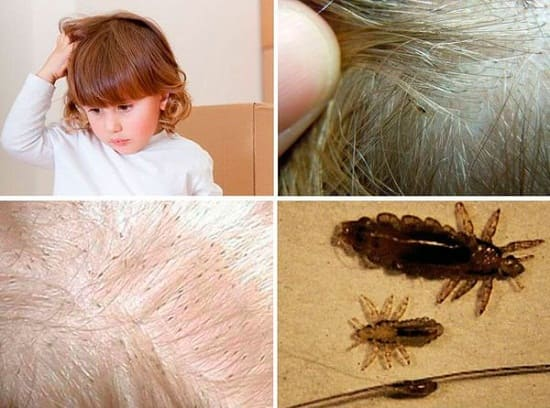
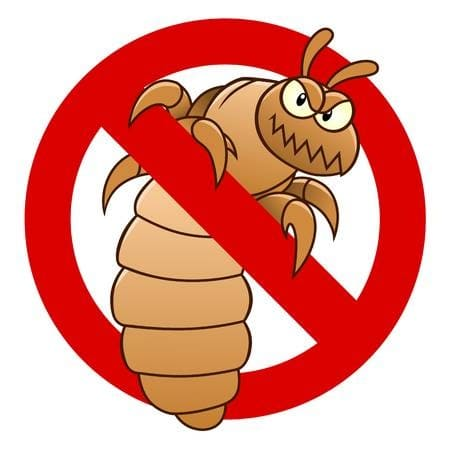

Это очень распространенная проблема среди детей школьного возраста. Головные вши — это крошечные существа, которые живут волосистой части головы и верхний части шеи человека и откладывается яйца на волосяных стержнях. Эти крошечные существа процветают в среде, где люди тесно контактируют между собой. Вот почему вы так часто слышите о вспышках болезни в школе. Они свободно могут путешествовать с одного человека на другого о при непосредственном контакте, либо при прикосновении к одежде постели зараженного человека, либо при совместном использовании расчески. Головные вши могут жить больше месяца, а их яйца (называемые «гниды») — до двух недель.
СИМПТОМЫ
В ПОИСКАХ ВШЕЙ
Головные вши и их яйца очень маленькие. Зачастую их можно заметит только при очень близком рассмотрение. Очень важно исследовать кожу тщательно, используя одноразовые перчатки. Осматривайте маленькими пучками по всей длине сверху вниз до корней, уделяя особое внимание областям вокруг шеи и ушей. Используйте увеличительное стекло, которое поможет вам разглядеть головных вшей и их яйца.
СОВЕТ ДОКТОРОВ СИРС: ВШИ МОГУТ ЖИТЬ В САМОМ ЧИСТОМ ДОМЕ Зачастую приходится сталкиваться с несправедливым общественным предрассудком, касающимся заражения головными вшами. В прошлом считалось, что это связано низким социально- экономическим статусом или плохой гигиеной. Мы знаем, что это НЕ связано с тем, кто заражен головными вшами, а кто — нет. Даже самый чистый ребенок может легко подхватить головных вшей. |
ЛЕЧЕНИЕ
Лечение рекомендуется практически всегда, даже если обнаружено всего одно яйцо (гнида).
Смойте вшей с волос. Безрецептурные шампуни и лосьоны для многократного применения могут решить проблему с головными вшами часто всего за одну процедуру. Для полного очищения иногда возникает необходимость второй обработки примерно через 7 дней. Тем не менее, если лечение безрецептурными средствами не дает результатов, в некоторых случаях используют рецептурные препараты. Дополнительное лечение с большей вероятностью может потребоваться девочкам потому что у них, как правило, более длинные волосы.
Станьте сборщиком гнид. После применения шампуня или лосьона используйте частый гребень, чтобы удалить все оставшиеся гниды. Для большей эффективности предварительно в волосы вотрите оливковое масло. Это поспособствует более легкому удалению гнид.
СОВЕТ ДОКТОРОВ СИРС: ВСЕ ДЕЛО ТОЛЬКО В ОТВРАТИТЕЛЬНЫХ ВШАХ Головные вши редко являются поводом для обращения к врачу. Они не переносят никаких заболеваний и в действительности не доставляют никаких проблем, за исключением зуда. Школы и детские учреждения перегибают с этим палку, поэтому их называют «ПЕДантами». И заражение вашего ребенка педикулезом не является отражением гигиены ваше дома. Дети и их маленькие друзья вши могут посещать школу и детские учреждения. Политика «нет гнидам» не обязательна. |
Сдуйте вшей. Почти в каждой аптеке можно купить специально предназначенный для этого фен. Он может использоваться для удаления оставшихся вшей и гнид, которые все еще могут находиться в волосах даже использование обычного фена может быть эффективным для этой цели.
Задушите вшей. Это трудно, но эффективно. Нанесите оливковое, арахисовое масло или майонез на волосы. Оставьте на ночь и тщательно промойте волосы утром.
Очистите дом от шей. Постирайте всю одежду, шапки и постельное белье, с которыми ребенок контактировал с момента заражения. Используйте моющие средства и горячую воду. Вши могут недолго жить вне человеческого тела. Иногда, в тяжелых случаях заражения головными вшами, из-за того, что ребенок слишком много чешет голову, и появляется расчесы, может развиться вторичная бактериальная инфекция. Иногда для лечения в таких случаях требуются антибиотики.
Предотвратите распространение вшей. Нижеперечисленные предметы никогда нельзя давать другим, если у вашего ребенка головные вши или если вы подозреваете, что у его друга или одноклассника могут быть вши:
• шапки;
• расчески;
• щетки для волос;
• постельное белье;
• полотенца;
•одежда.

Здоровье ребенка от докторов Сирс / Сирс У. и др.